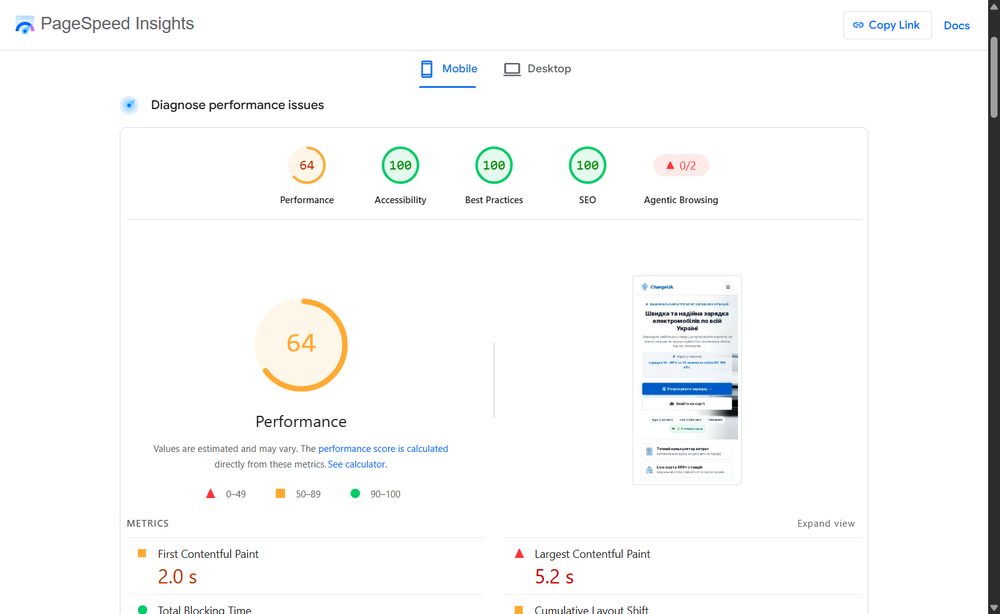
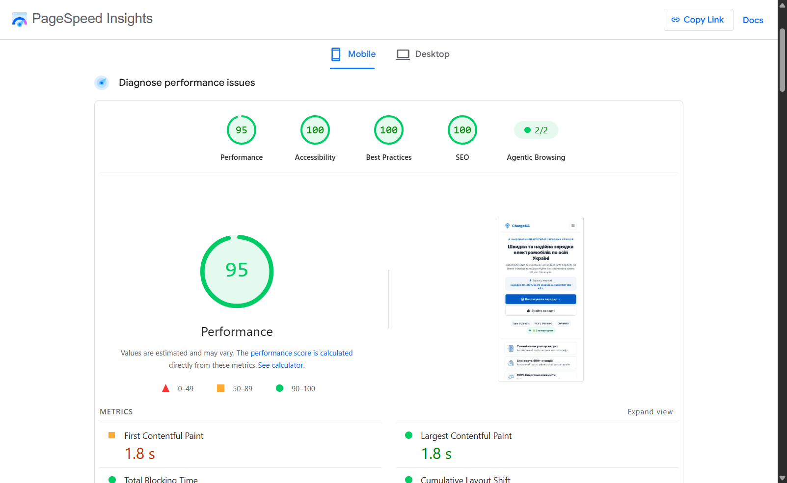
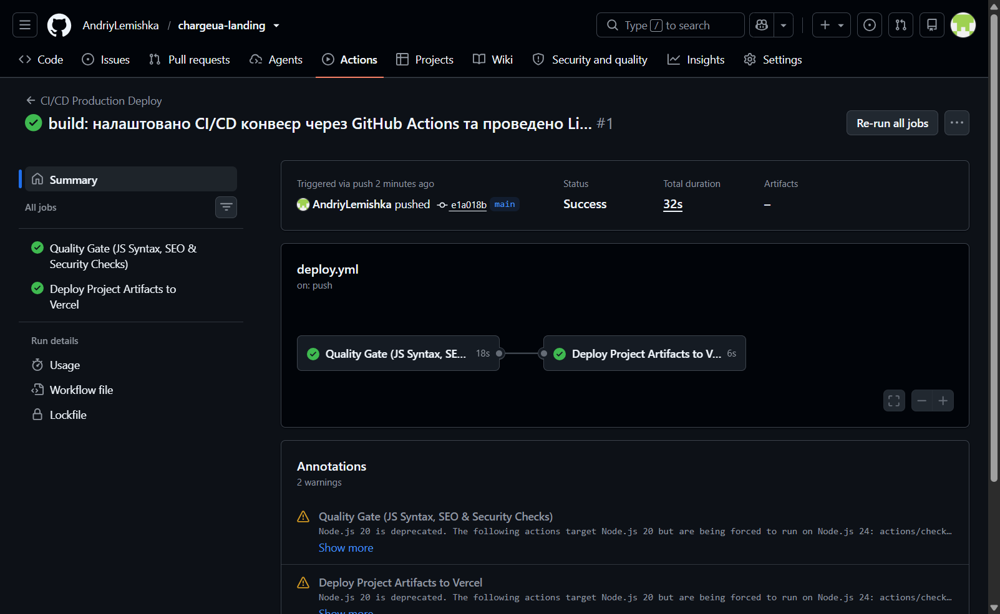
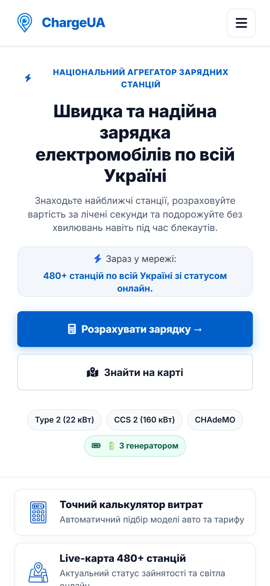

Лабораторна робота №12: Аудит, оптимізація продуктивності та автоматизація релізу (CI/CD)
Фінальний аудит лендингу ChargeUA у Google PageSpeed Insights (Mobile Slow 4G), усунення блокуючих ресурсів і зміщення макета CLS, налаштування конвеєра GitHub Actions (.github/workflows/deploy.yml) та мобільний запуск через QR-код.
1. Аудит Google PageSpeed Insights (До vs Після оптимізації)
Mobile • Lighthouse 13.6.0| Категорія / Метрика | До оптимізації | Після оптимізації | Що змінено в коді |
|---|---|---|---|
| Performance | 64 | 95 | Неблокуючі CSS (media="print" onload), preconnect до jsDelivr, перенос Hero-відео на десктоп |
| Accessibility | 100 | 100 | Контраст 4.5:1, зв’язки label/for, focus-visible |
| Best Practices | 100 | 100 | 0 помилок консолі, 0 битих запитів, noopener |
| SEO | 100 | 100 | Додано robots.txt, sitemap.xml, canonical, Open Graph |
| Agentic Browsing | 0 / 2 | 2 / 2 | Прибрано дублювання ARIA на #media-slider-container і зсув CLS |
| LCP / CLS | 5.2 s / 0.241 | 1.8 s / 0.018 | Фіксована висота .hero-typed-line (46px / 70px) і відкладення 1.68 МБ відео |
2. Автоматизація CI/CD у GitHub Actions (.github/workflows/deploy.yml)
Коміт e1a018b • Success 32sПри кожному git push у гілку main автоматично запускається перевірка синтаксису всіх 8 модулів (node --check js/*.js), перевірка SEO-файлів (robots.txt, sitemap.xml, canonical) та безпечності calculator.js (відсутність innerHTML), після чого виконується деплой на Vercel.
name: CI/CD Production Deploy
on:
push:
branches: [ main ]
jobs:
qa-audit:
name: Quality Gate (JS Syntax, SEO & Security Checks)
runs-on: ubuntu-latest
steps:
- uses: actions/checkout@v4
- uses: actions/setup-node@v4
with:
node-version: '22'
- name: Validate JavaScript Modules Syntax
run: |
for file in js/*.js; do node --check "$file"; done
- name: Verify SEO, Security & Defensive Code Standards
run: |
test -f index.html && test -f robots.txt && test -f sitemap.xml
grep -q 'rel="canonical"' index.html
if grep -q 'innerHTML' js/calculator.js; then exit 1; fi
deploy-vercel:
needs: qa-audit
runs-on: ubuntu-latest
steps:
- uses: actions/checkout@v4
- name: Deploy Project Artifacts to Vercel Production
env:
VERCEL_TOKEN: ${{ secrets.VERCEL_TOKEN }}
run: |
if [ -n "$VERCEL_TOKEN" ]; then
npm install --global vercel@latest
vercel pull --yes --environment=production --token="$VERCEL_TOKEN"
vercel deploy --prod --yes --token="$VERCEL_TOKEN"
else
echo "VERCEL_TOKEN secret is not set; production deploy runs via Vercel Git integration."
fi3. Мобільне крос-браузерне тестування через QR-код
QRCode.js • Level H + a11yВідскануйте QR-код камерою смартфона (iOS Safari / Android Chrome), щоб відкрити фінальний продакшн-сайт ChargeUA без введення адреси вручну. За стандартом доступності поруч продубльовано клікабельне текстове посилання, а для коду обрано найвищий рівень корекції помилок H (30% відновлення).
4. Технічний скріншот-звіт (PageSpeed До/Після, Actions, Mobile)
Клікніть для збільшення


